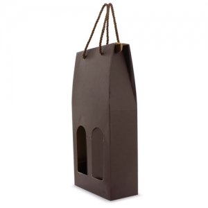

Tipos e variantes
Sacos e bolsas de apresentação
Uma abertura simples facilita retirar o artigo; cordões, abas ou fechos alteram a forma de acesso. Observe se as pegas suportam o modo de transporte previsto e se o conteúdo fica exposto.
Aspetos que distinguem as opções: Boca, fundo, pegas e posição do objeto dentro do saco.
Contexto possível: Entrega em mão e apresentação de conjuntos.
Caixas dobráveis e caixas rígidas
As dobras, abas e tampas definem a sequência de montagem e abertura. A classificação técnica de caixas de cartão descreve construções; não comprova por si só resistência ou proteção. ↗
Aspetos que distinguem as opções: Medidas internas, fecho, montagem e forma de retirar o artigo.
Contexto possível: Apresentação individual, conjuntos e organização da entrega.
Estojos
Um estojo pode acompanhar um artigo durante o uso ou servir apenas na entrega. Verifique o espaço livre junto a pegas, clips e tampas e a forma como o objeto é retirado.
Aspetos que distinguem as opções: Abertura, apoio interno, fecho e volume guardado.
Contexto possível: Instrumentos de escrita, pequenos acessórios e conjuntos.
Separadores e elementos de encaixe
Uma divisória separa objetos; um encaixe procura mantê-los numa posição definida. Teste o conjunto real para perceber se uma peça roda, sai do lugar ou dificulta retirar outra.
Aspetos que distinguem as opções: Folgas, acesso dos dedos, orientação e montagem.
Contexto possível: Conjuntos com vários componentes.
Cartões e informação de acompanhamento
Um cartão pode apresentar a mensagem ou indicar como começar a usar o objeto. Separe essa mensagem das instruções essenciais e confirme que estas continuam disponíveis depois de abrir.
Aspetos que distinguem as opções: Leitura, posição, idiomas necessários e relação com a abertura.
Contexto possível: Acolhimento e apresentação informativa.

Usos e contextos
- Distinga entrega em mão de expedição. A embalagem de apresentação pode precisar de acondicionamento exterior para o percurso.
- Monte um exemplar com todos os componentes e percorra a abertura como alguém que ainda não conhece o conjunto.
O que comparar
- Meça o artigo na posição embalada e com os acessórios. A medida exterior da caixa não é o espaço interior útil.
- Abra, retire e volte a colocar cada componente; folgas pequenas podem bloquear o acesso e folgas grandes podem permitir movimento.
- Se houver transporte, documente o percurso e os ensaios relevantes; uma construção visualmente robusta não demonstra proteção contra impacto.
- Defina como se separam os componentes depois do uso, sem afirmar reciclabilidade apenas pela aparência.
Materiais e componentes
São possibilidades a identificar no artigo escolhido. Confirme a composição de cada parte; os materiais de uma variante não descrevem toda a família.
Paredes e separadores
papel · cartão
Identifique espessura, construção e acabamento. Gramagem e rigidez são propriedades distintas. ↗
Estojos e caixas com partes rígidas
madeira · bambu
A aparência não identifica a espécie, a composição ou o tratamento; confirme o material.
Bolsas e fitas
materiais têxteis
Observe costuras, cordões e forma de união às outras peças.
Zonas de personalização
- Tampa ou face exterior: Observe a orientação antes e depois de abrir, evitando dobragens que atravessem informação essencial.
- Cartão e separadores: Verifique se a mensagem fica visível ou escondida pelo artigo e se há espaço para retirar cada peça.
Técnicas e condições
Possibilidades gerais para comparar. A aplicação depende do artigo, da superfície, do desenho e das condições do processo; não está confirmada para um artigo específico.
Impressão digital UV
Avalie acabamento e aderência da face escolhida; a impressão não deve impedir dobras ou fechos.
Serigrafia
Avalie a superfície, a tinta e a montagem, incluindo eventuais painéis têxteis.
Gravação a laser
Em suportes adequados, ensaie material, revestimento e efeito; a aparência de madeira não basta.
Limitações e cuidados
- Apresentação cuidada não é garantia de qualidade do artigo nem de proteção durante o transporte.
- Uma embalagem para contacto direto com alimentos requer avaliação para esse uso; a designação de caixa ou saco de oferta não o demonstra. ↗
- Guarde os componentes segundo as instruções dos materiais e do artigo; não reutilize uma embalagem danificada para uma função que não foi avaliada.
- Mantenha as instruções do objeto acessíveis depois de retirar a apresentação exterior.
Antes de decidir
- O conjunto cabe com todos os acessórios?
- Como se retira cada peça?
- A entrega é em mão ou envolve transporte?
Perguntas frequentes
Uma caixa de apresentação serve para expedir?
Pode precisar de proteção exterior e de avaliação do percurso. A apresentação, por si só, não demonstra aptidão para expedição.
Mais gramagem significa mais proteção?
Não basta. Construção, encaixe e comportamento do conjunto também precisam de avaliação.
O que distingue apresentação de premium?
A apresentação é uma dimensão concreta de escolha. Premium continua a ser uma designação editorial transversal, sem garantia automática de qualidade.
Fontes e âmbito
As referências sustentam os factos identificados no texto. Os tipos, contextos e critérios de escolha são orientação editorial; as instruções de um fabricante aplicam-se ao seu próprio âmbito.
-
Sistemas construtivos de caixas de cartão
FEFCO · Consulta:Classificação de construções de embalagem de cartão. Identificar uma forma não demonstra resistência, proteção ou reciclabilidade.
-
Informação técnica sobre cartão
Documentação técnica de referência · Consulta:Diferenças entre gramagem, espessura e ensaios de rigidez do cartão.
-
Materiais em contacto com alimentos
Comissão Europeia · Consulta:Recipientes, utensílios e embalagens destinados a contacto alimentar. Enquadramento geral; não comprova a conformidade de qualquer artigo ilustrado.